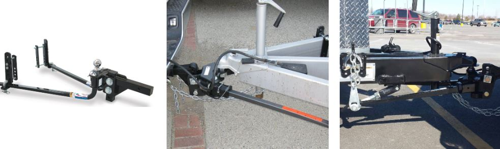
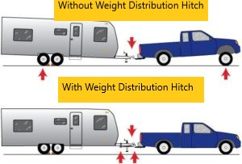

RV Sway Bar and Stabilizer: The Basics
The most typical causes for an rv sway are some sort of draft from other passing vehicles such as semi trucks, gusts of wind, turns on curved roadways, or some type of imbalanced load in the trailer. Drivers hate even the smallest amount of sway, which requires consistent correcting steering. Sway and stabilization prevention systems; such as stabilizer jacks, sway bars, or sway control hitches make for a more secure and smoother drive.
How can you prevent sway?
There are a couple of basic, sensible things you can do to minimize the opportunity for sway to occur.
- Initially, it's always best to take notice of the weather. It might not be a great day to take a trip if it's really windy. RVing is everything about recreation. Take into consideration a brief hold-up as an opportunity for you to chill or unwind wherever you are. Being patient is a virtue in rving!
- Secondly, consider how much load you will be towing or carrying. This is essential in preventing any type of rv sway. Disperse weight in your Motor Home uniformly from back to front and also from side to side. If required, relocate larger things to the front. A great general rule of thumb is that 60 percent should be to the front, while 40 percent should be in the back. Test the weight of your rv at a weight station or local scale and move items around to help prevent your rv from swaying.
- Drive Slowly. If you drive at a moderate speed you will have less chances of having your rv sway.
- Check your tire pressure. If your tire is under-inflated, you are more likely to experience some sort of rv sway.
- Plan your lane changes ahead of time. Making sudden steering changes can cause rv sway.
What is a weight distribution hitch?
A weight distribution hitch is a system that is added to vehicles to create a stable and level ride while you tow a trailer. It's main job is to keep your vehicle level and reduce the stress from towing another vehicle.
So When Do You Need a Weight Distribution Hitch?
A weight distribution hitch may be needed in many different scenarios. Here is a list of reasons why you might want to install one.
- If you have experienced any type of trailer sway.
- You decided to tow the maximum weight that your tow vehicle is allowed to tow.
- If you see your headlights start to point upwards while towing.
- You witness a sag in the rear of your tow vehicle while towing.
- Whenever steering gets more difficult or you realize your stopping distance has increased.
Surge brakes and weight distribution hitches
The question has been asked over and over of whether or not weight distribution hitches can be used with surge brakes.
Only some weight distribution hitches can safely be utilized with a surge brake. A lot of chain-style systems are not suitable to use with surge brakes as they do not enable sufficient backward and forward motion of the trailer to turn the actuator on.
What exactly are surge brakes?

Surge brakes are hydrolic and are operated by using the forward or backward momentum of a vehicle to be activated.
How to help control trailer sway?

There is possibility that your rv might sway at least once while taking it out for an adventure. The best direction to take is to activate manual brake control by hand.
- Take your foot of the accelerator and do not use the brake pedal unless you are about to hit something.
- Keep both hands on the steering wheel. Hold the steering wheel firmly to avoid extra sway from passing vehicles.
- Try to pull over safely and figure out what caused your rv to sway.
How to Install or Adjust Your Weight Distribution Hitch
There are a few steps for you to follow when adjusting or installing a weight distribution hitch. Getting this step in your rv adventures correct will reduce the possibility of trailer sway.
Steps to adjust and install your trailer hitch
- Measure trailer and vehicle height
- Attach the hitch head and WD shank
Park your trailer and vehicle on a flat area and also make use of the trailer tongue jack and use a level to ensure your trailer is fully leveled. When you measure the height of your trailer and the height of your vehicle, be sure to make a record of the measurements. When you measure the height of your trailer and the height of your vehicle, be sure to make a record of the measurements.
Place the weight distribution shank right into the receiver tube. Make sure that the shank is completely placed inside the receiver tube of the trailer hitch and use a hitch pin and clip to secure it.
Does a weight distribution hitch increase towing capacity?
No, a weight distribution hitch does not increase your towing capacity. It does make it easier to tow the maximum capacity that your towing vehicle is allowed to tow.
What does a sway bar do on a camper?
Sway bars help to disperse the weight of a camper much more equally by utilizing the camper's weight to develop stability. It additionally make it less complicated to steer your camper or Motor Home. There are numerous kinds of sway bars that all function a little bit different and they also come in at different costs.
Do I need a sway bar for my camper?
Whether or not you have ever experienced some sort of sway in your camper before, a sway bar is a great addition. Adding one will help to prevent any future sway that may happen.
Do sway bars affect ride quality?

Yes, a sway bar does affect ride quality and in a negative way. When a vehicle's tire falls into a pothole, the suspensions job is to resist the fall into the pothole which makes for a comfortable ride. When a sway bar is added, more resistance is added to the suspension which causes the body of the car to go lower into the pothole than it would without the sway bar. This makes for an uncomfortable ride.
Do sway bars help towing?
When you install a sway bar it helps to prevent the vehicle's sway and body roll of the tow vehicle. This however does not prevent sway on the vehicle being towed. For that, you need a sway control weight distribution hitch.
How tight should a sway bar be?
A sway bar should be tightened to the point where your steering does not spring to the center location when you turn a corner and then you should back it out just a little. Test how you much you have tightened it by going for a short drive and adjust as needed. If you can't get the results you are looking for then you might need a second one.
Do you need a sway bar with a weight distribution hitch?
A sway bar with a weight distribution hitch is always a good idea as it helps with getting a more comfortable ride.
Can I tow my camper without sway bars?
A sway bar is not necessary to tow a trailer. However, installing on will give you a peace of mind knowing that your trailer is less likely to sway.
Are sway bars really worth it?
Sway bars are worth every penny especially if you notice that your recreational vehicle has been swaying recently.
Can too much tongue weight cause trailer sway?
Yes, too much tongue weight can cause the rear tires to be overloaded which in turn cause sway. Trailer sway happens when you have less than 10% tongue weight. This mostly happens when a vehicle is moving too fast.
Does a sway bar affect steering?
Yes, a sway bar affects steering. This is because steering can become compromised if the sway bar links become loose. Sway bar links are attached to lower control arms.
ConclusionAn rv sway bar is a great addition to any tow vehicle. It is not a must have but will make any vehicle a little bit better. If you experience any type of rv sway, then get an rv sway bar to help reduce or eliminate it.